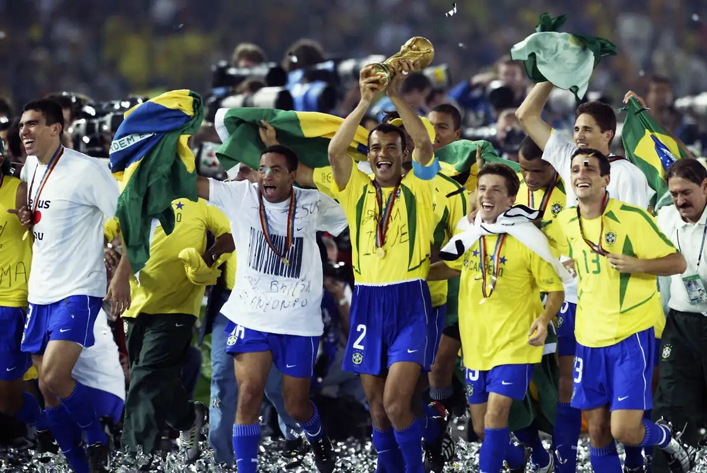
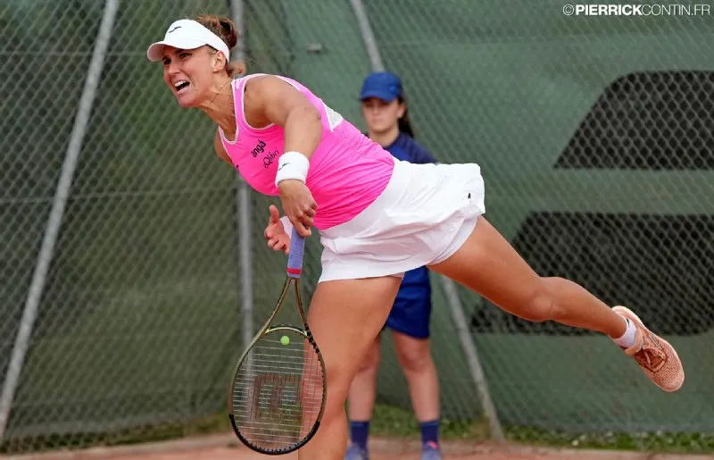

Copa do mundo de futebol: a seleção brasileira rumo ao hexa!
Rio de Janeiro, 11 de Dezembro de 2024
A Seleção Brasileira inicia hoje a sua jornada rumo ao tão sonhado hexa na Copa do Mundo. Em uma coletiva de imprensa,
o técnico anunciou a lista dos convocados, destacando a mistura de jovens talentos e jogadores experientes. O primeiro desafio será contra a Seleção da França, atual campeã mundial, o que promete um jogo emocionante logo de cara.
Os torcedores brasileiros estão cheios de esperança e prontos para apoiar a equipe em busca de mais um título, ver mais

Grand Slam de tênis: tenista brasileira conquista título histórico
São Paulo, 11 de Dezembro de 2024
A tenista brasileira Maria Silva fez história ao conquistar seu primeiro título de Grand Slam no Aberto da Austrália. Em uma final emocionante, Maria venceu a atual número 1 do mundo em três sets acirrados, consolidando-se como uma das grandes promessas do tênis mundial.
"É um sonho realizado, e eu devo isso ao apoio da minha família, da minha equipe e dos fãs," declarou Maria emocionada após a vitória,
ver mais

Seleção brasileira de vôlei conquista título mundial
São Paulo, 12 de Dezembro de 2024
A seleção brasileira de vôlei masculino conquistou o título mundial em uma final emocionante contra a equipe da Rússia.
O jogo, realizado na Arena de São Paulo, foi decidido no tie-break, com o Brasil vencendo por 3 sets a 2.
O capitão da equipe, João Silva, destacou a união e a determinação do time como fatores decisivos para a vitória.
"Trabalhamos duro para chegar até aqui e essa conquista é de todos nós," declarou emocionado após o jogo, ver mais
Postagens recentes
Inauguração do novo Parque Tecnológico
impulsiona a inovação em São Paulo
Leia mais
Festival de música do Rio de Janeiro atraí
multidões e impulsiona o turismo local
Leia mais
Campanha nacional de vacinação
contra a gripe começa em todo o país
Leia mais